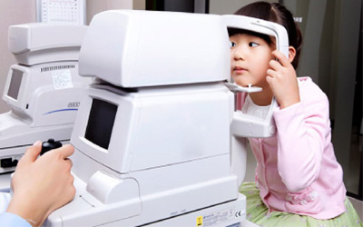
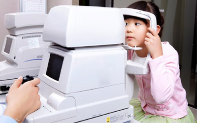
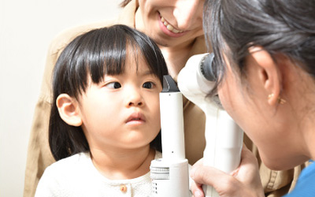
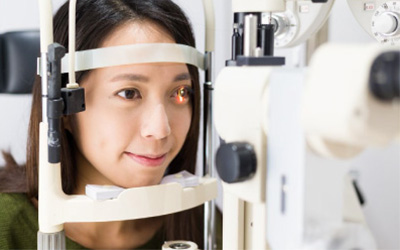
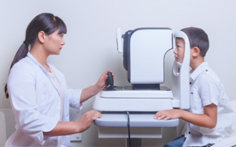

一般眼科診療
結膜炎（はやり目など）、アレルギー性結膜炎（花粉症など）、なみだ目・ドライアイ、ものもらい、霰粒腫など目の違和感（ゴロゴロする、かゆみ、充血）や痛みなど目に関する病気など、眼のケアや治療に関するさまざまな情報を提供します。

当院では結膜炎やものもらいなどの一般診療から最先端の技術を使った手術が行えます。
また、患者様に合った眼鏡やコンタクトも処方いたします。
結膜炎（はやり目など）、アレルギー性結膜炎（花粉症など）、なみだ目・ドライアイ、ものもらい、霰粒腫など目の違和感（ゴロゴロする、かゆみ、充血）や痛みなど目に関する病気など、眼のケアや治療に関するさまざまな情報を提供します。

子どもの斜視・弱視など、お子様の眼の病気は早期発見が大切です。
特に乳幼児期のお子様は症状が分からず 訴えて来ないことが多いので、 お早めにご来院をオススメします。

先進的な設備を導入して患者様への負担の少ない 安全・安心な治療を心掛けています。


受付にて健康保険証、あれば診察券、紹介状、お薬手帳をご提示ください。
受付時に問診表をお渡しいたします。必要事項を全てご記入ください。
問診票にご記入いただいた内容を元に、医師が診断し、治療方法のご説明をいたします。
治療に対するご希望、ご質問などもお聞きします。遠慮なく何でもお伝えください。
診察、処置後は待合室でお待ちください。
受付でお名前をお呼びしますので、お会計をお願いいたします。
お薬が出ている場合は院外処方箋をお渡しいたします。
初めて来院される際は、以下のものをご持参ください。